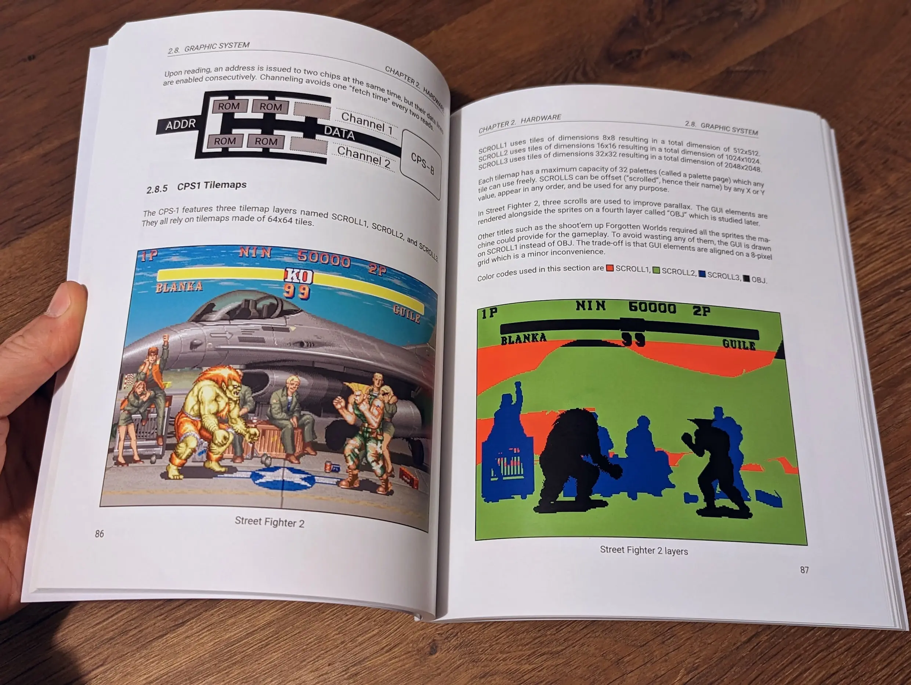

The Book of CP-System is now available in paper version! Inside you will find 240 full-color pages to learn everything you ever wanted to know about the hardware and software powering Capcom's arcade titles such as Street Fighter II, Ghouls ’n Ghosts, or Final Fight.
It is available at both Amazon and TheBookPatch. If you prefer to remain digital, you can find the PDF here. It is also available on the GooglePlay Store here.
A selection of what you can find inside.
I cranked up all the parameters of the Amazon version. I used full color and premium paper quality. Somehow the quality is still not as good as what comes out of the bookpatch printers.
One issue I found is that Amazon books (below on the right) are slightly warped compared to the bookpatch (on the left).

Another way to tell the polish level is to look at the corners.
The bookpatch version corner (above) looks like it was carved in granite. The Amazon one (below) is a little bit rugged.
The same kind of observation can be made on the opposite corner.
The bookpatch (above) is not pristine but not as beat up as the one from Amazon (bottom).
Anyway, regardless of which version you pick I hope you will enjoy it!
Take care.